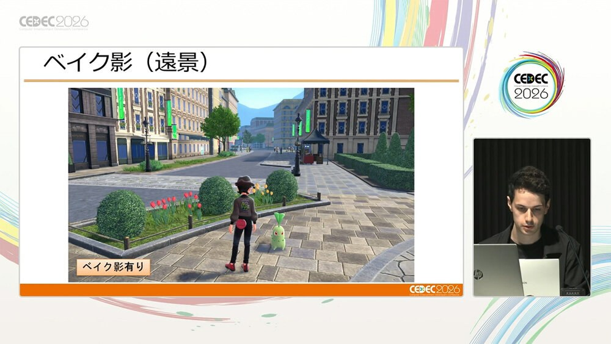

01
《Pokémon LEGENDS Z-A》城市渲染：GPU Instance Culling、三層水面反射與統一 PokéRig
Game Freak 公開密阿雷市的大量實例繪製、階層式 Z 遮蔽、分高度 SSPR、遠距烘焙陰影，以及把人物與寶可夢整合到同一模組化 Rig／Retarget 流程的做法。

渲染 ★★★★★
完整分析
城市渲染流程
團隊把大量重複街燈、長椅與建築附件改以 Instanced Draw 管理，先在 CPU 依群組剔除，再於 GPU 處理大量 instance 並用 indirect draw 決定是否送出；遮蔽資料則以 depth prepass 建立階層式 Z，降低單一大城市中不可見物件的負擔。
美術與 Rig 價值
水面依三個高度群組共用 SSPR，遠距陰影以四方向烘焙到 RGBA 後隨時間混合，讓美術控制與效能預算可以並存；人物與不同骨架寶可夢也透過模組化 PokéRig、重映射與多階段 build 共用資料流，減少大量角色長期維護成本。
導入測試
這些策略依賴場景遮蔽、重複度與目標主機特性。採用前應以代表性城市街區量 CPU/GPU culling、instance group 粒度、深度金字塔成本、不同水位反射記憶體，以及跨二足／四足角色 retarget 後的腳底、重心與極端姿勢品質。